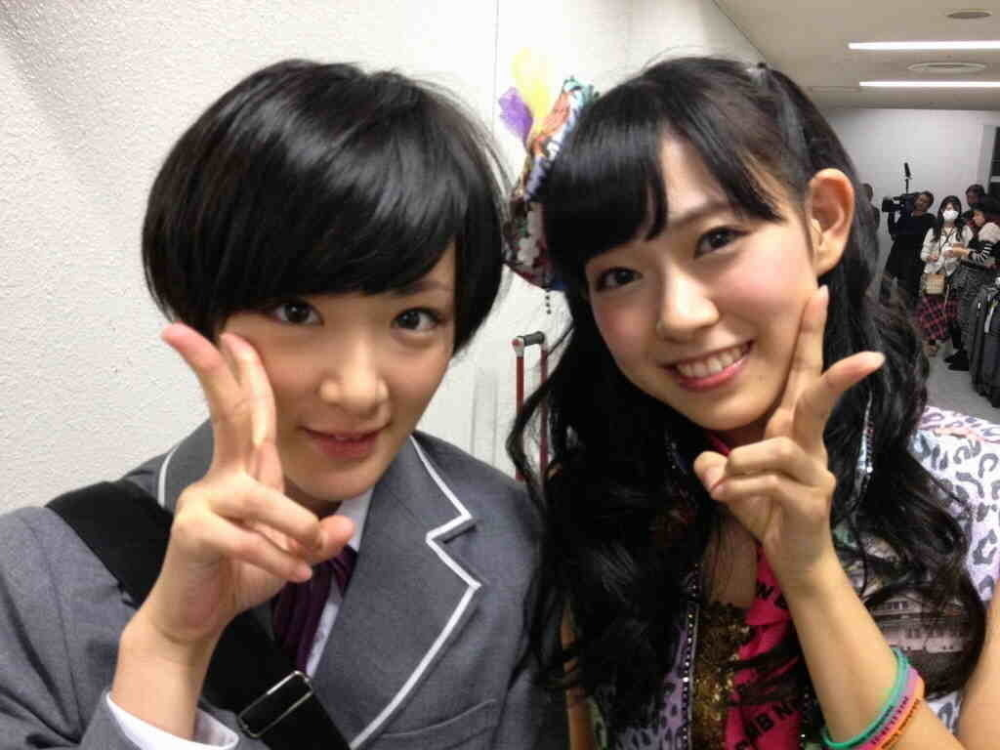

| 2012/11 12 Mon | はぴはぴはび!! |
昨日はハッピーミュージックライブでした！
来て下さった皆さん!!
ありがとうございました！見つけまくりましたからね

初めての横浜アリーナ
うん。
でかっ
ひろっ
フォーヽ(・∀・)ノ
でした！
めちゃめちゃ人が入るんですね〜ヽ(・∀・)ノ
ドキドキしました！
でも楽しかった。
同時に沢山学びました。
ステージの使い方や盛り上げかた、毎日学んでます!!まだ乃木坂にはレベルの高いものが多すぎる、でも高くても、やるには相応しくないと、否定されても今全力でやらなければ目標にはたどり着く事ができません。
同じ事をすることは出来ないし、同じ事をした時、きっと止まってしまうと思います。
いろんなものとぶつかって戦って、勝たなきゃ行けないのだ。
制服のマネキンをライブ初披露&テレビ初披露でしたね〜ヽ(・∀・)ノ
なんだかんだいろいろか意見が飛び交っておりますがまだまだフルバージョンをやっておりませんし、題名には意味が隠されているからちと探ってみてね!!
ヒントはいこまちゃんだよ〜ヽ(・∀・)ノ
てかいこまちゃんだけじゃないよ〜ヽ(・∀・)ノ
難しいかな〜?
あとモノマネを披露しました〜
いこまちゃん悪戦苦闘

すんませんっ!!
出直してきます!!
とまぁそんな中で嬉しいことがありました！
ででんっヽ(・∀・)ノ

みるきーさんと写真撮った
のわぁああああ!!
顔ちっさい!!
ほっぺぷにぷに!!
かわいい〜かわいい〜かわいい〜のほほん〜
いこまちゃん前からかわいいな〜と思っててん、今回結構喋ることができてね

また会ったら話しかけてもいいですか？的なことも言っていただいてもう嬉しくてね!!
いこまちゃん挙動不審になりました。
かわいい言いながら壁をぺちぺち叩くという行為をしてしまいました。
いや〜
かわいいっていいね!!
だめだっ!!
かわいいものを目の前にするとおかしくなる!!
ぜぁっ!!
がぁ!!
いこまはかわいい女の子が好きですっ!!
変態ではないよっ？
あと皆さんにご報告します♪
いこまちゃんとある撮影のため、４日ほど日本を離れます。
どこに行くのかって？
それはひみつ〜ヽ(・∀・)ノ
だからしばらくブログ出来ませんが、元気に撮影しているので待ってての〜

ではいってきやす

へばなっ!!
コメント(284)
2012/11/12 08:30